Characters 拡張
原書: Characters Expansion Rulebook（20ページ）
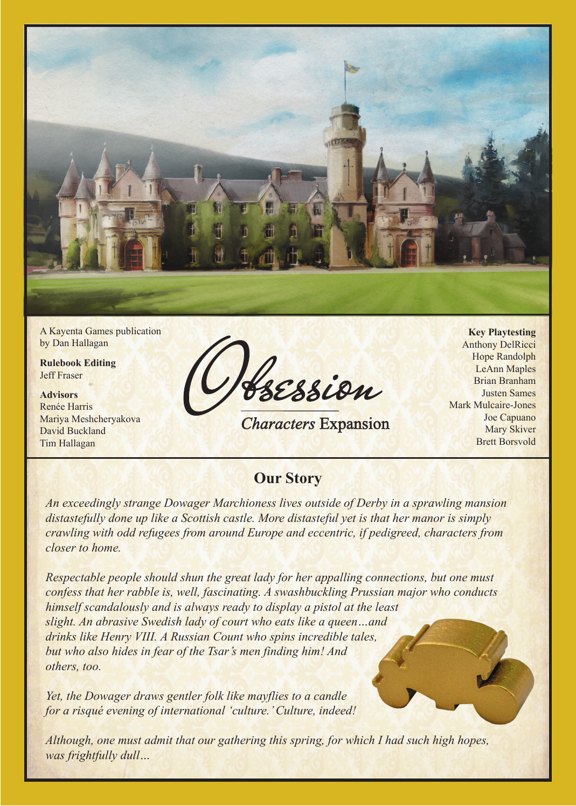
物語
スコットランドの城を思わせる邸宅で、ダービー郊外に暮らす非常に奇妙な侯爵夫人（Dowager Marchioness）がいます。彼女の邸宅は単純にみすぼらしいというだけでなく、ヨーロッパ各地からの奇妙な難民や、血筋は良いが個性的な人物たちで溢れかえっています。
世間の良識ある人々は彼女の交際範囲の悪さからこの貴婦人を敬遠すべきですが、スキャンダルを恐れずに自らを晒すプロイセン人少佐——少なくとも1回は気軽にピストルを取り出そうとするほどです。無礼なスウェーデン人の宮廷貴族で女王のように食べる人物……そしてツァーの手下から逃げながらも陰に潜むロシア人伯爵も！
それでも侯爵夫人は、国際的な「文化」の夕べという刺激的な雰囲気に普通の上流階級の人々を引き寄せます。文化、まさに文化！
しかしながら、私が期待を持っていた今春の集いは、恐ろしくも退屈なものでした……
コンポーネント一覧
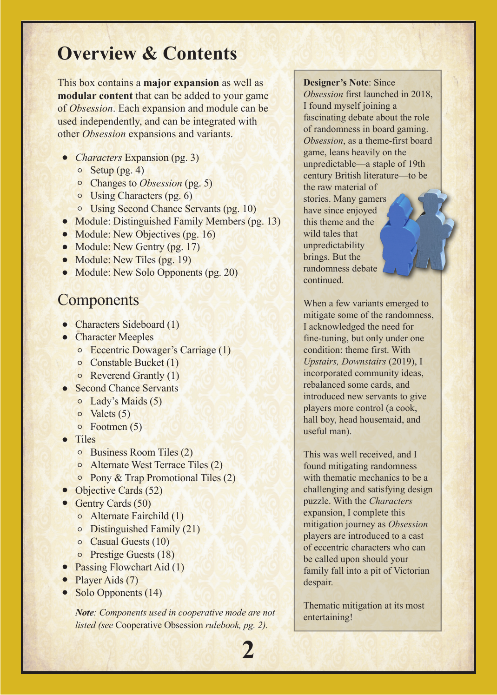
コンポーネント
Characters 拡張の概要
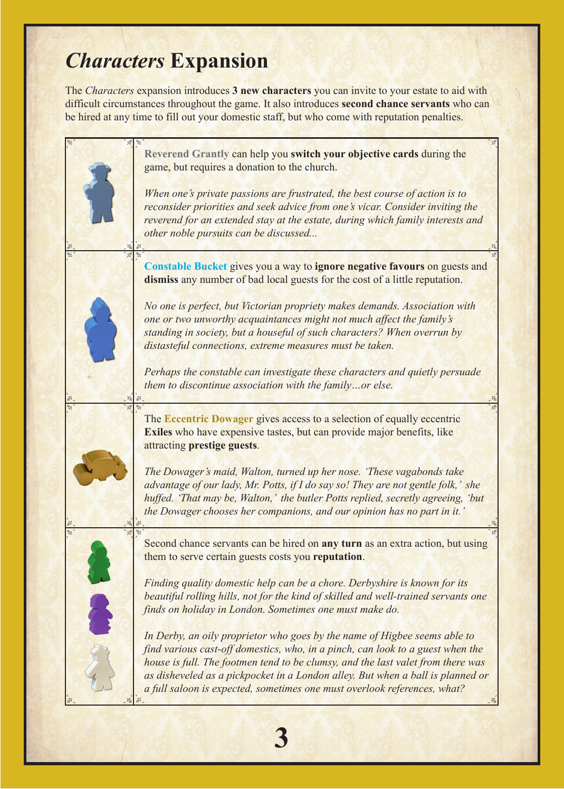
Characters 拡張では、ゲームの助けとなる3人の新キャラクターを邸宅に招待できます。また、使用人が足りない時に雇える第二の機会の使用人（Second Chance Servants）も導入されます（評判ペナルティあり）。
グラントリー牧師はゲーム中に目標カードを入れ替えることができます（教会への寄付が必要です）。
個人的な情熱が打ち砕かれたとき、最善の行動は優先順位を再考し、牧師に相談することです。家族の利益や他の高尚な追求について話し合える機会に、牧師を招くことを検討してください。
バケット巡査は評判のわずかなコストで好ましくない恩恵を無視し、一般ゲスト（Casual Guest）を何人でも解雇する手段を与えます。
誰も完璧ではありませんが、ヴィクトリア朝の礼儀作法は厳格な要求をします。好ましくない人物1〜2人との交際はさほど家族の評判に傷をつけないかもしれませんが、そういった人物が多くなれば、より抜本的な措置が必要です。おそらく巡査はその人物たちを静かに調べ、家族との交際を断ち切るよう説得することができます……さもなければ。
侯爵夫人は同様に奇妙な亡命者（Exiles）のコレクションを持っており、彼らは高価な趣味を持つものの、名声ゲストを招くなど大きな恩恵をもたらします。
侯爵夫人の従者ウォルトンはこう鼻を鳴らしました。「これらの浮浪者どもはうちの奥様を利用しているんです、もし私がそう言ってよければ。彼らは上品な人々じゃありません」とポッツ従者は答えましたが、「それでも奥様は彼女の仲間を選ぶのです。私どもはそれに口を出す立場にありません」と続けました。
ダービーシャーでは熟練した国内使用人を見つけるのが難しいことで知られています——ロンドンで休暇中の従僕がいないわけではありませんが。時々、一人で用を足さなければなりません。
セットアップ
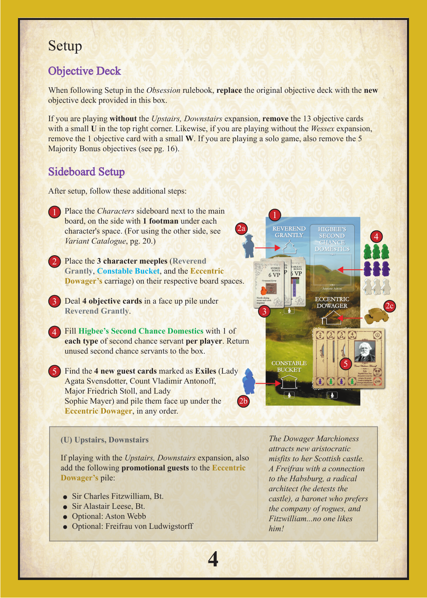
目標デッキの差し替え
Obsession のルールブックのセットアップに従い、このボックスに含まれる新しい目標カードデッキに差し替えてください。
- Upstairs, Downstairs 拡張なしでプレイする場合: 「U」マーク付きの13枚の目標カードを取り除きます。
- Wessex 拡張なしでプレイする場合: 「W」マーク付きの1枚の目標カードを取り除きます。
- ソリテアでプレイする場合: 「多数決ボーナス（Majority Bonus）」目標5枚も取り除きます（p.16参照）。
サイドボードのセットアップ
-
1
Characters サイドボードをメインボードの隣に置く。各キャラクタースペースのサイドを正しい面（キャラクターの絵が描かれた面）にします。
-
2
3体のキャラクターミープル（牧師・巡査・侯爵夫人の馬車）をそれぞれのサイドボードスペースに置きます。
-
3
グラントリー牧師のスペースに目標カードを4枚、表向きに置く。
-
4
ハイビーの第二の機会の使用人（SCS）を各タイプ1体ずつ充填する。余ったSCSは箱に戻します。
-
5
亡命者の4枚の新ゲストカードを見つける（レディ・アガタ・スヴェンスドッテル、ウラジミール・アントノフ伯爵、フリードリヒ・シュトル少佐、ゾフィー・マイヤー淑女）。これらをサイドボードの侯爵夫人スペース下に表向きで重ねて置きます（任意の順序で）。
基本ゲームへの変更点
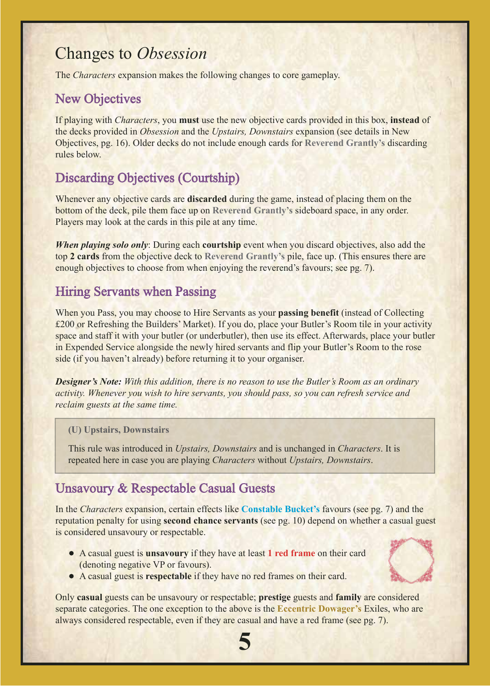
① 新しい目標カード
Characters でプレイする場合は、このボックスの新しい目標カードデッキを必ず使用してください（Obsession や Upstairs, Downstairs のデッキの代わりに）。
② 求婚時の目標カード捨て（Discarding Objectives at Courtship）
求婚活動（Courtship）が発生するたびに、目標カードをデッキの底に置く代わりにグラントリー牧師の山に置きます（顔を下に）。いつでもこの山のカードを見ることができます。
ソリテアでのみ: 目標カードを捨てるとき、それらをグラントリー牧師の山に置く代わりに（顔を上にして）、ソリテア対戦相手の山の上に置きます。これにより、ゲーム中に達成できる目標の数が十分になります。
③ パス時の使用人雇用（Hiring Servants when Passing）
パスするとき、執事の部屋（Butler's Room）タイルを使って使用人を雇用することをパスの恩恵として選べます（£200の受け取りや建築家市場でのタイル購入の代わりに）。雇用する場合:
- 活動スペースに執事タイルを置きます（またはアンダーバトラー）。
- 「使用可能（Available Service）」にいる使用人を共有ボードの「雇用可能（Servants for Hire）」エリアから好きなだけ雇用します（ただし、その後で置いた従者は待機（Expended）に戻す必要があります）。使用人は次のターンから使用可能になります。
④ 好ましくない一般ゲスト（Unsavoury & Respectable Casual Guests）
Characters 拡張では、一部の恩恵（巡査バケットの恩恵やSCSの評判ペナルティ）は一般ゲストが「好ましくない（Unsavoury）」か「礼儀正しい（Respectable）」かによって異なります:
- 一般ゲストが好ましくない（Unsavoury）のは、カードに赤枠が1つある場合です（負のVPを示します）。
- 一般ゲストが礼儀正しい（Respectable）のは、カードに赤枠がない場合です。
名声ゲストと家族カードは常に礼儀正しいとみなされます。侯爵夫人の亡命者（Exiles）は、一般ゲストでも赤枠があっても礼儀正しいとみなされます（唯一の例外）。
キャラクターの使い方
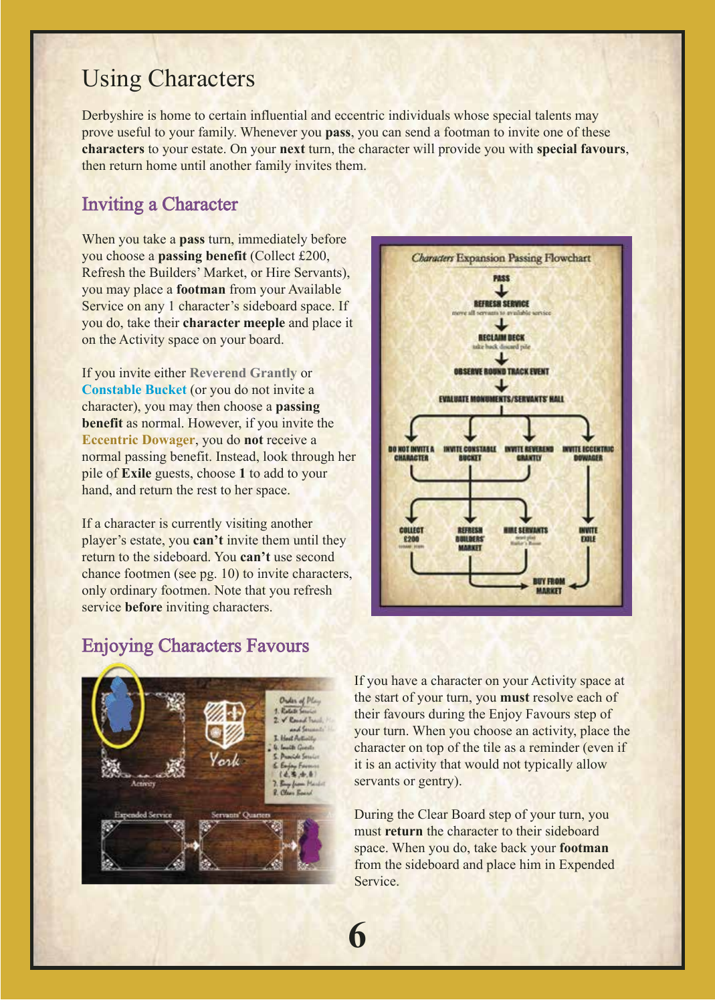
ダービーシャーには、特別な才能を持つ影響力のある奇妙な人物たちが住んでいます。パスするとき、そのうちの1人を邸宅に招待するために従者を送ることができます。次のターン、そのキャラクターはあなたに特別な恩恵をもたらします。
キャラクターの招待（Inviting a Character）
パス（Pass）を取ったとき、通常のパスの恩恵（£200、タイル購入、使用人雇用）を選ぶ前に、「使用可能（Available Service）」にいる任意の従者（Footman）を選び、サイドボードのキャラクタースペースに置くことができます。
- その後、通常通りパスの恩恵を選びます。
- グラントリー牧師または巡査バケットを招待する場合（またはキャラクターを招待しない場合）、通常のパスの恩恵を受け取ります。
- 侯爵夫人を招待する場合は、通常のパスの恩恵を受け取りません。その代わりに侯爵夫人の亡命者の山からカードを1枚引き、手元に置きます。残りは山に戻します。
キャラクターが現在他のプレイヤーの邸宅を訪問している場合、そのキャラクターは戻ってくるまで招待できません。
キャラクター恩恵の享受（Enjoying Characters Favours）
次のターンの開始時に、活動スペースにキャラクターがいる場合、「恩恵の享受（Enjoy Favours）」ステップでその恩恵を必ず全部受け取ります。
- 活動を選ぶとき、活動タイルの上にキャラクターのミープルを置きます（たとえその活動が通常は使用人やゲストを必要としない場合でも）。
- ターン終了時（「プレイヤーボードのクリア（Clear Board）」ステップ）に、キャラクターをサイドボードに戻し、そこに置いていた従者をあなたの「待機（Expended Service）」に置きます。
キャラクターの恩恵
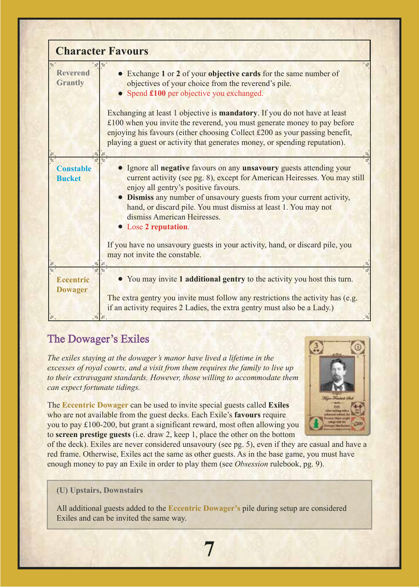
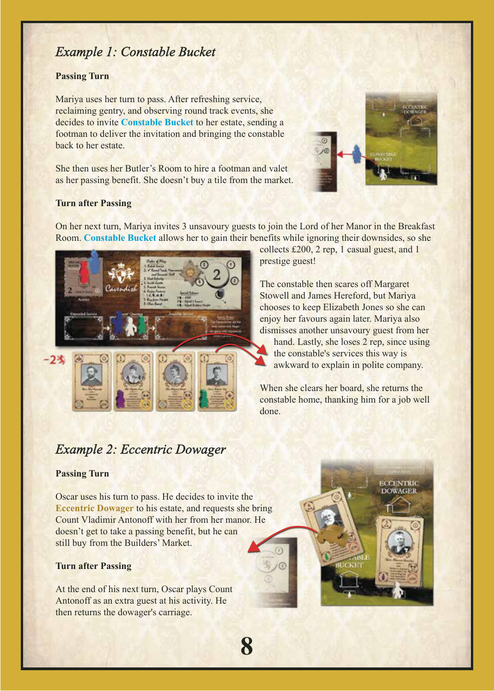
招待した追加ゲストは通常の招待制限ルールに従います（例：活動が淑女2人を必要とするなら、追加ゲストも淑女でなければなりません）。
注意事項とリマインダー（Characters）
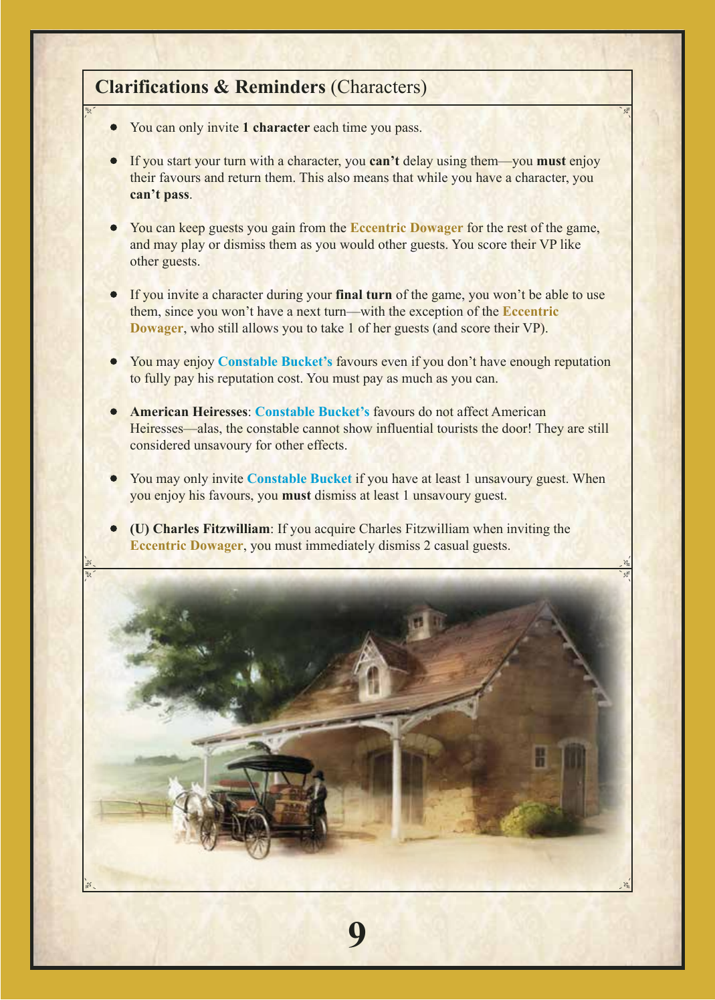
- パスごとに招待できるキャラクターは1人のみです。
- キャラクターがいる状態でターンを開始した場合、すぐに恩恵を受け取らなければなりません。キャラクターがいる間はパスできません。
- 侯爵夫人から得た亡命者はゲーム終了まで手元に置けます（お好みで解雇も可能）。亡命者は通常のゲストと同じようにVPを獲得します。
- ゲームの最終ターンにキャラクターを招待する場合、次のターンがないため恩恵を使えません——ただし侯爵夫人を除きます（亡命者のVPは終了時に計算されます）。
- 巡査バケットの恩恵はアメリカン・ヘレス（American Heiresses）には適用されません——巡査は影響力のある観光客に扉を閉めることができません！それでも他の効果は使えます。
- 評判が巡査バケットの費用を完全に支払うのに不十分でも恩恵を受け取れます。できる限り支払ってください。
- 巡査バケットを招待できるのは、活動・手札・捨て札に好ましくないゲストが少なくとも1人いる場合のみです。
- （U）チャールズ・フィッツウィリアム: 侯爵夫人を招待してチャールズ・フィッツウィリアムを引いた場合、好ましくない一般ゲスト2人をすぐに解雇しなければなりません。
第二の機会の使用人（Second Chance Servants）
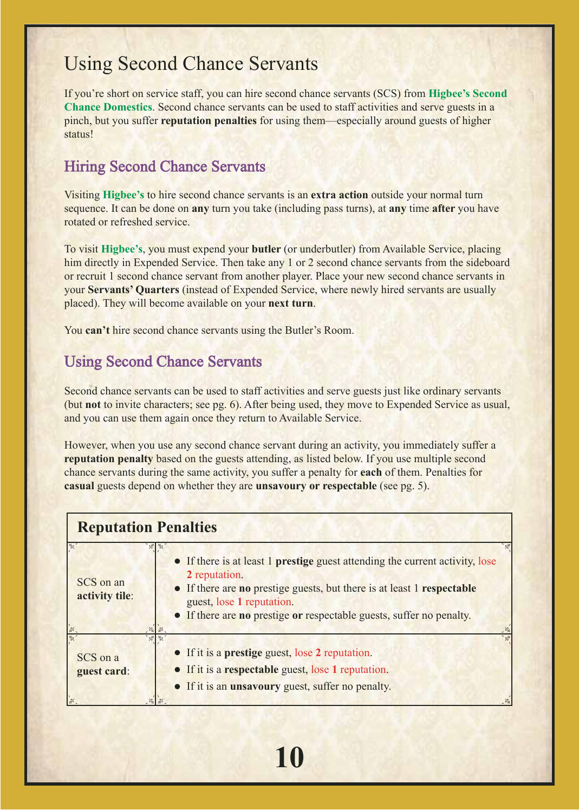
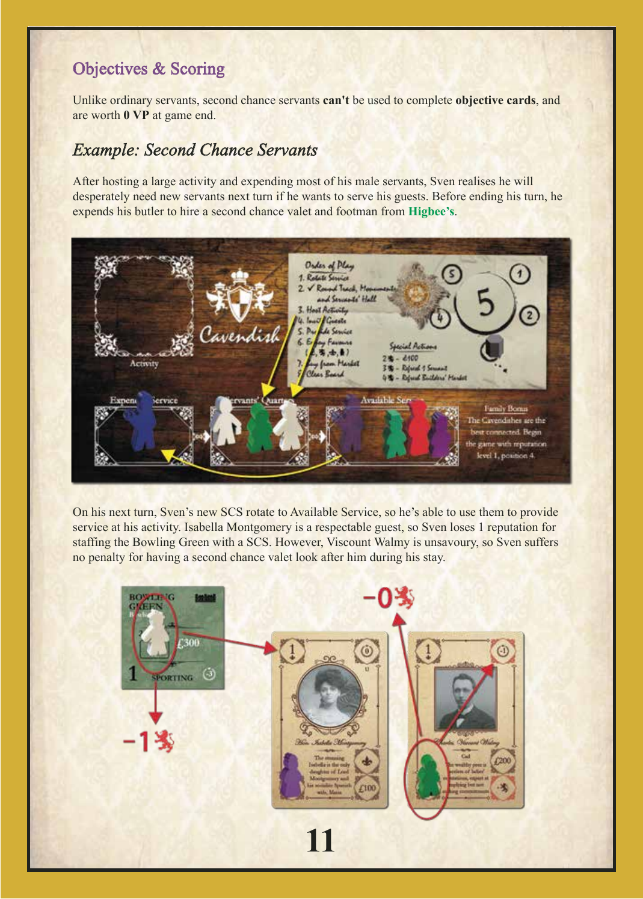
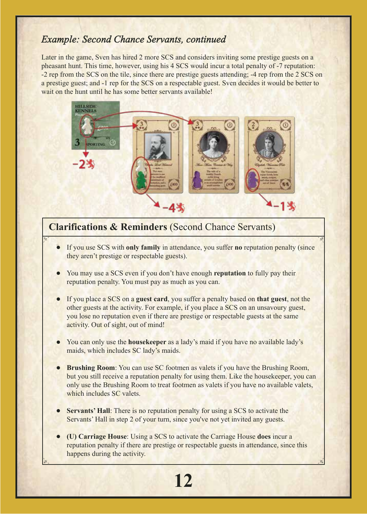
使用人が不足している場合、ハイビー（Highbee's）の「第二の機会の使用人（SCS）」を雇えます。SCS は活動に配置したり、ゲストのサービスをしたりできますが、評判ペナルティが伴います。
SCS の雇用
ハイビーの SCS の訪問は、通常のターン順序外の追加アクションです（パスの場合を含む）。任意のターンにこれを行うことができます（パスのターンも含む）。
SCS を雇用するには:
- 執事（またはアンダーバトラー）を「使用可能（Available Service）」から取り、活動スペースに置きます。
- サイドボードから SCS を1〜2体選び、別のプレイヤーの「使用人の食堂（Servants for Hire）」エリアから雇用するか、1体の SCS を別のプレイヤーから徴用します。
- 新しい SCS を「使用人の食堂（Servants' Quarters）」に置きます——通常雇用された使用人と同様に配置します。次のターンから使用可能になります。
執事の部屋（Butler's Room）を使って SCS を雇用することはできません。
SCS の使用
SCS は活動に使用したりゲストにサービスしたりすることができます（p.6参照）。使用後は通常通り「待機（Expended Service）」に置かれ、次のターンから再び使用可能になります。
SCS を活動に使用するたびに、参加ゲストに応じて評判ペナルティが発生します:
評判ペナルティ（Reputation Penalties）
| SCS の使用場面 | ペナルティ |
|---|---|
| 活動タイルの SCS: 名声ゲストが1人以上いる場合 | 評判 –2 |
| 活動タイルの SCS: 名声ゲストがいないが礼儀正しい一般ゲストが1人以上いる場合 | 評判 –1 |
| 活動タイルの SCS: 名声ゲストも礼儀正しい一般ゲストもいない場合 | ペナルティなし |
| 上流階級カードの SCS: 名声ゲストカードの場合 | 評判 –2 |
| 上流階級カードの SCS: 礼儀正しい一般ゲストカードの場合 | 評判 –1 |
| 上流階級カードの SCS: 好ましくない一般ゲストカードの場合 | ペナルティなし |
目標カードと得点
SCS は目標カードの達成には使用できません。またゲーム終了時のVPは0です。
注意事項とリマインダー（SCS）
- SCS を家族のみ（家族カード）で活動する場合、評判ペナルティはありません。
- 評判が SCS の費用を完全に支払えなくても使用できます——できる限り支払ってください。
- SCS を上流階級カードに置く場合、そのカードのみに基づいてペナルティが決まります（他のゲストには影響しません）。
- 家政婦長を侍女の代わりに使用できるのは、通常の侍女（Lady's Maid）がいない場合のみです（SCS の侍女を含む）。
- ブラッシングルーム: SCS の従者を従僕の代わりに使えますが、評判ペナルティが発生します。ブラッシングルームを使って従者を従僕として扱う場合のみ使えます（通常の従者がいない場合）。SCS の従僕を含みます。
- 使用人の食堂（Servants' Hall）: ステップ2でまだゲストを招待していない場合、SCS を使って使用人の食堂を起動してもペナルティはありません。
- （U）馬車の家: 馬車の家を起動するために SCS を使用する場合、名声ゲストか礼儀正しいゲストが参加していれば評判ペナルティが発生します。
モジュール：著名な家族メンバー（Distinguished Family Members）モジュール
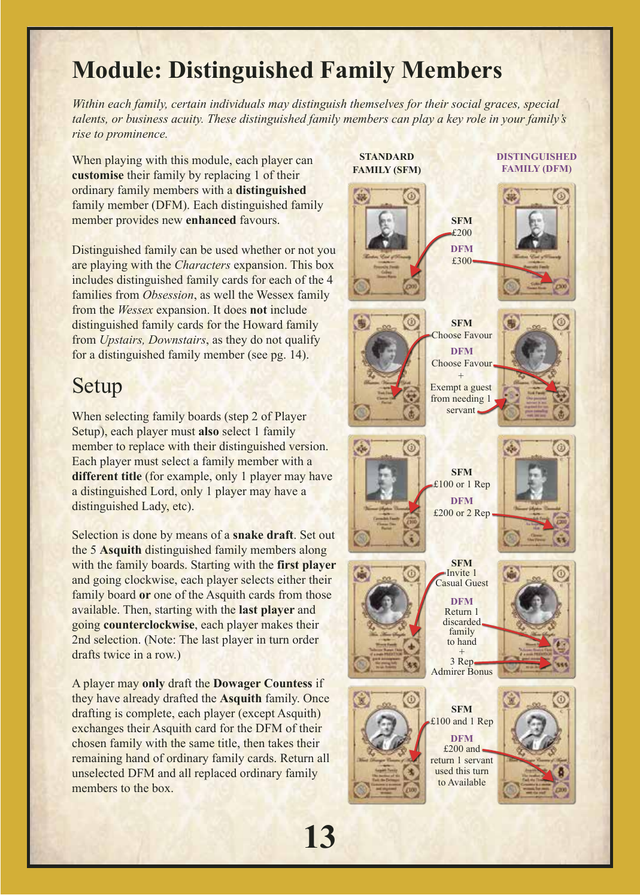
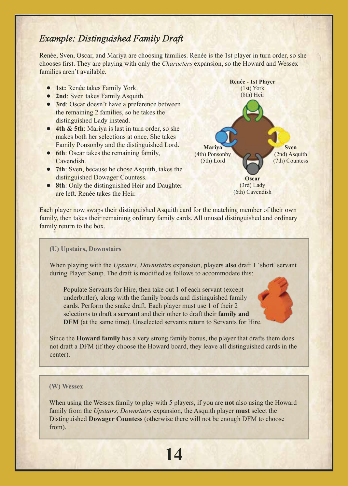
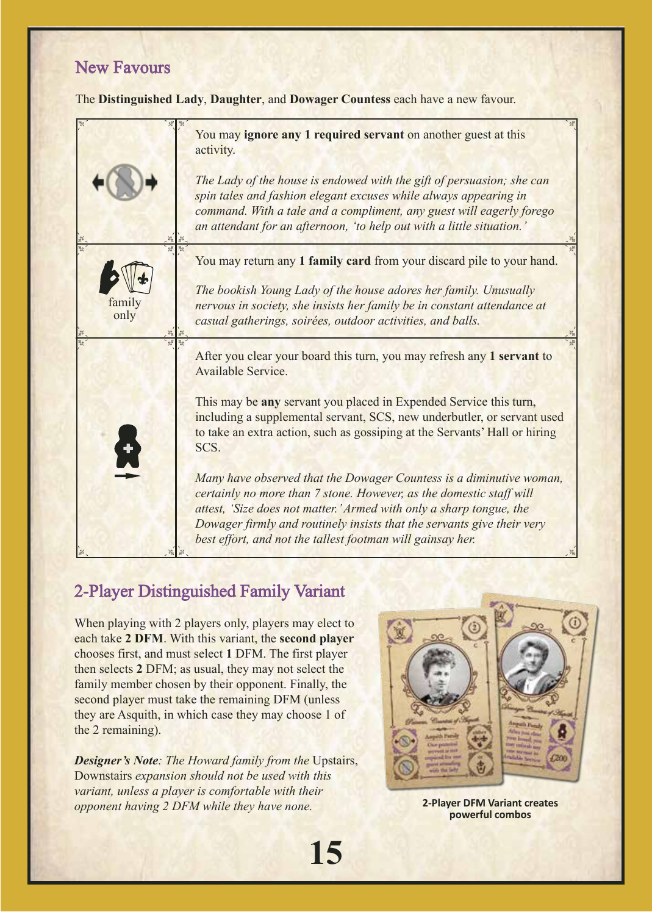
各家族の中には、社交的な魅力や特別な才能、ビジネスの才覚で頭角を現す人物がいます。こうした「著名な家族メンバー（Distinguished Family Member: DFM）」は家族の評判向上において重要な役割を果たします。
このモジュールは Characters 拡張を使用するか否かに関わらず使用できます。このボックスには4家族それぞれの著名な家族カードが含まれており、Obsession の Wessex 家族カードも含まれます（Upstairs, Downstairs のハワード家は含まれません）。
セットアップ
家族ボードを選ぶとき（プレイヤーエリアセットアップのステップ2）、各プレイヤーは同時に、自分の家族ボードに置き換える著名な家族メンバーを1人選ばなければなりません。各プレイヤーは異なる称号の家族メンバーを選ばなければなりません（例えば著名なロードは1人だけ）。
選択はスネークドラフト方式で行います:
- アスキス家の著名な家族メンバー5人（通称「アスキス著名者リスト」）と共に家族カードを取り出します。先手プレイヤーから始め、時計回りに各プレイヤーが1人選びます。
- 次に、最後のプレイヤーから始め（逆順で）、各プレイヤーが2回目の選択をします。
（U）Upstairs, Downstairs との組み合わせ
U&D 拡張でプレイする場合、セットアップ時に「短い」使用人（Cook等）のドラフトと DFM のドラフトを同時に行います。各プレイヤーは家族ボードと DFM を同時に選択します（家族ボードを選んだ後に DFM ドラフトを行います）。
ハワード家はファミリーボーナスが非常に強力なため、ハワード家をプレイするプレイヤーは DFM を受け取りません（ドラフトは行われません）。
（W）Wessex との組み合わせ
5人プレイで Wessex 家族を使用する場合（U&D 拡張なし）、アスキス家プレイヤーは必ず「著名な侯爵夫人（Distinguished Dowager Countess）」を選ばなければなりません（選択肢が不足するため）。
著名な家族メンバーの新恩恵
著名な淑女・令嬢・侯爵夫人にはそれぞれ新しい恩恵があります:
家の淑女は説得の賜物を授かっており、社交上の言い訳を巧みに並べながら、いつでも客人を気遣うことができます。
家の若い淑女は社交を愛しており、家族が常に出席することを主張します。
（このターン中に「待機」に置いた使用人も含む——SCS・新アンダーバトラー・使用人の食堂でのゴシップに使った使用人なども対象）
侯爵夫人は縮小した家政婦（domestic）を7人以上置かない——家政婦スタッフは確かにその数以上は存在しないから。しかし、これらの家政婦は家全体の士気を保つ非常に有能な管理能力を持っています。
2人プレイ DFM バリアント
2人プレイのみ: 各プレイヤーが2人の DFM を取るようにしてもよいです。2番目のプレイヤーが先に選び、次に1番目のプレイヤーが選びます。最後に2番目のプレイヤーが残りの DFM から選びます（同じ称号でなければ選べます）。
モジュール：新目標カード（New Objectives）モジュール
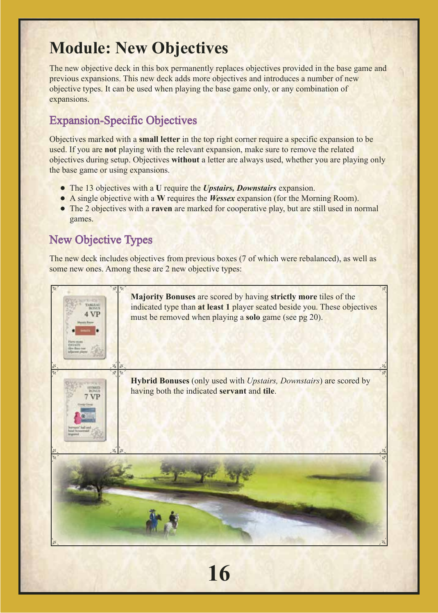
この新しい目標カードデッキは、基本ゲームや以前の拡張の目標カードを永続的に置き換えます。デッキには以前のボックスの目標カード（7枚はリバランス済み）と新しい目標カードが含まれています。どのゲームの組み合わせでも使用できます。
拡張専用目標カード
右上隅に小文字が付いた目標カードは、特定の拡張が必要です:
- 「U」マーク: Upstairs, Downstairs 拡張が必要。
- 「W」マーク: Wessex 拡張が必要（朝の間用）。
- ワタリガラスマーク: 協力プレイ用ですが、通常ゲームでも使用できます。
該当の拡張なしでプレイする場合は、関連する目標カードを取り除いてからゲームをプレイしてください。
新しい目標タイプ
多数決ボーナス（Majority Bonus）
多数決ボーナス目標は、示されたタイプのタイルを他のプレイヤーより多く持っている場合に得点します（少なくとも1人より多く必要）。これらの目標はソリテアゲームでは取り除いてください（p.20参照）。
ハイブリッドボーナス（Hybrid Bonus）
ハイブリッドボーナス目標は（Upstairs, Downstairs 拡張でのみ使用）、示された使用人とタイルの両方を持っている場合に得点します。
モジュール：新上流階級カード（New Gentry）モジュール
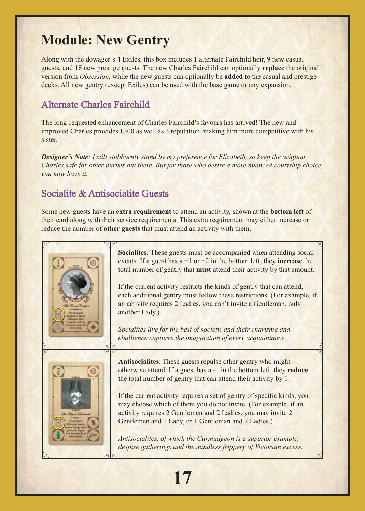
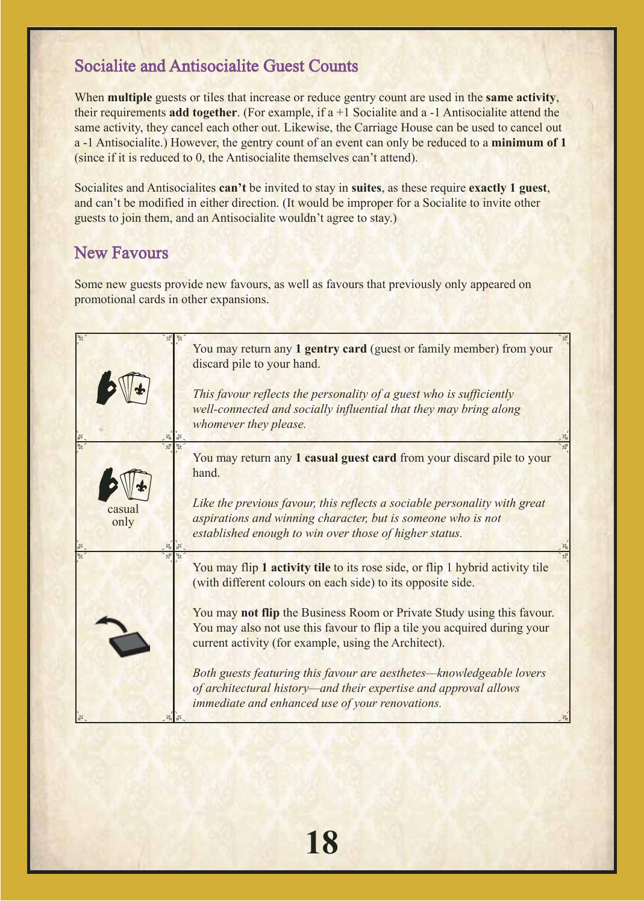
このモジュールには代替チャールズ・フェアチャイルドと新しいゲストカードが含まれています。これらは基本ゲームや任意の拡張と組み合わせて使用できます。新しいゲスト（Exiles 以外）は一般ゲストデッキや名声ゲストデッキに任意で追加できます。
代替チャールズ・フェアチャイルド（Alternate Charles Fairchild）
長年要望されてきたチャールズ・フェアチャイルドのアップグレードが実現しました！新しいチャールズは£300と評判3を提供し、姉エリザベスと同等の競争力を持ちます。
社交家ゲスト（Socialite Guests）
一部のゲストには追加要件があります——活動の社交場に参加する必要があります。カードの左下に「+1」または「+2」と表示されている場合、ゲストの招待数をその分増やさなければなりません。
現在の活動が特定の種類のゲストに制限されている場合は、その制限が引き続き適用されます（例：活動が淑女2人を必要とするなら、追加ゲストも淑女でなければなりません）。
社交家は社会の花形として生き、その魅力と活気はすべての知人の想像力をとらえます。
反社交家ゲスト（Antisocialite Guests）
反社交家ゲストは他のゲストを遠ざけます。カードの左下に「–1」と表示されている場合、参加できるゲスト数を1減らします。
現在の活動が特定の種類のゲストを必要とする場合、招待する人物を自由に選べます（例：活動が紳士2人と淑女2人を必要とする場合、紳士2人と淑女1人、または紳士1人と淑女2人を招待できます）。
反社交家の中でも守銭奴は上位の例で、集会や無意味なヴィクトリア朝の過剰さを嫌っています。
社交家・反社交家のゲスト数への影響
同じ活動に社交家と反社交家の両方がいる場合、互いに相殺されます（例：+1の社交家と–1の反社交家がいれば、ゲスト数の変化はなし）。ゲスト数は最低1まで減少できます（0にはなりません）。
社交家・反社交家はスイートには招待できません（スイートにはちょうど1人のゲストが必要なため）。
新しい恩恵（新上流階級カードから）
十分につながりがあり社交的で礼儀正しいゲストは、好きな時に誰でもそっと連れてくることができます。
社交的な野心と勝ち気な性格を持つゲストで、地位が高い人々の心を掴む才能を持ちますが、社会的地位が確立されていないゲストを代表します。
ビジネスルームやプライベートスタディでのこの恩恵は使用できません（現在使用中の活動のため）。
両方のゲストはこの恩恵を持つ美学者です——建築の歴史に精通しており、その知識と承認により、邸宅の改築への即座の活用が可能になります。
モジュール：新タイルモジュール
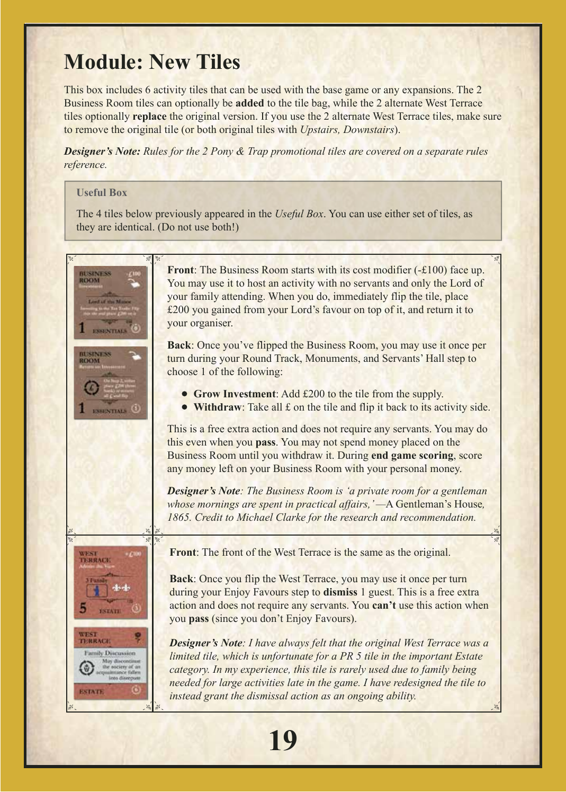
ビジネスルーム（Business Room）
必需品（ESSENTIALS）カテゴリのこのタイルはコスト修飾子（–£100）があり、STARTタイルでもあります。つまり活動に使用人もゲストも必要ありません——あなたのロードのみが参加します。すぐにタイルを反転させて£200を取り、その£200を銀行に戻します（これは商取引です）。
後面（Back Side）: タイルが反転した後は、ラウンドトラック・使用人の食堂・各ターンのステップでこのタイルを1回使えます:
- 投資増加（Grow Investment）: 銀行から£200をタイルに追加します。
- 引き出す（Withdraw）: タイルから£を全額取り、タイルを表側に戻します。
このアクションは使用人を必要としません。ゲーム終了時にビジネスルーム上に残った£はあなたの個人的な資金として計算されます。
代替西テラス（Alternative West Terrace）
前面（Front Side）: 西テラスの前面はオリジナルと同じです。
後面（Back Side）: 後面に反転した後は、「恩恵の享受（Enjoy Favours）」ステップ中にターンに1回使えます: ゲスト1人を解雇します（このアクションは「パス」中には使えません）。
新ソリテア対戦相手
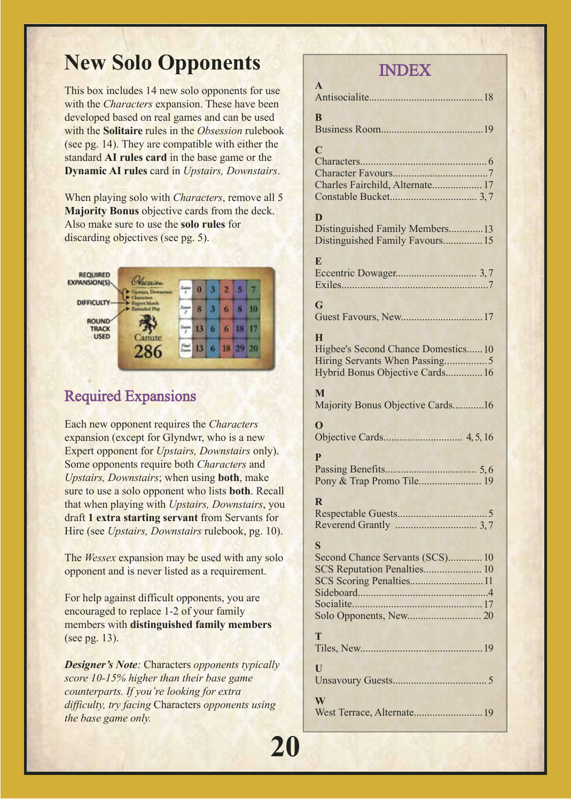
このボックスには Characters 拡張での使用に向けた14体の新しいソリテア対戦相手が含まれています。これらの対戦相手は Characters 拡張を使用したルールで開発されており、Obsession 本体のルールブックに記載されているソリテアルールにも対応しています。Upstairs, Downstairs 拡張とも互換性があります。
ソリテアでプレイする場合は、Characters 拡張の Dynamic AIルールカード（Upstairs, Downstairs の AIルールカードの代わり）を使用してください。
必要な拡張
各対戦相手カードには必要な拡張が記載されています（Glyndwr は Upstairs, Downstairs 専用の上位対戦相手）。どの対戦相手でも：
- Upstairs, Downstairs 拡張がある場合は、AIルールカードを Upstairs, Downstairs のものと入れ替えます。
- どちらの拡張も使用している場合は、両方から1体ずつ対戦相手を選べることを覚えておいてください。
索引（Index）
| 用語 | 参照ページ |
|---|---|
| 反社交家（Antisocialite） | p.18 |
| ビジネスルーム（Business Room） | p.19 |
| キャラクターの恩恵（Character Favours） | p.7 |
| 著名な家族メンバー（Distinguished Family Members） | p.13 |
| 著名な家族の恩恵（Distinguished Family Favours） | p.15 |
| 奇妙な侯爵夫人（Eccentric Dowager） | pp.3, 7 |
| 亡命者（Exiles） | p.7 |
| ゲストの新恩恵（Guest Favours, New） | p.17 |
| 多数決ボーナス目標（Majority Bonus Objective Cards） | p.16 |
| 目標カード（Objective Cards） | pp.4, 5, 16 |
| 礼儀正しいゲスト（Respectable Guests） | p.5 |
| 牧師グラントリー（Reverend Grantly） | pp.3, 7 |
| 社交家（Socialite） | p.17 |
| 新ソリテア対戦相手（Solo Opponents, New） | p.20 |
| 第二の機会の使用人（Second Chance Servants, SCS） | p.10 |
| SCS 評判ペナルティ（SCS Scoring Penalties） | p.10 |
| SCS 得点ペナルティ（SCS Scoring Penalties） | p.11 |
| 好ましくないゲスト（Unsavoury Guests） | p.5 |
| 西テラス代替（West Terrace, Alternate） | p.19 |